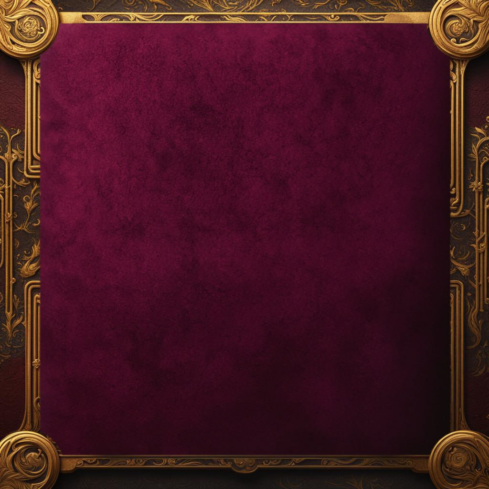

מה התהלים אומר עליך היום.
אמור את התפילה ובחר ספר או מגן דוד.
זכור! המהתל בגורל - הגורל מהתל בו.
לכן שאלה זו שאל פעם אחת ביום ורצוי בשעות הבוקר.
הכתוב בלשון זכר ומכוון גם לנקבה.
רִבּוֹן כָּל הָעוֹלָמִים, בְּשֵם יוֹדֵעַ נִסְתָּרוֹת וְנִגְלוֹת, בְּשֵם יוֹדֵעַ תַּעֲלוּמוֹת, גַּל עֱינַי וְאַבִּיטָה נִיפְלָאוֹת מִתּוֹרָתְךָ, ה' מְנַת חֶלְקִי וְכוֹסִי, אַתָּה תּוֹמִךְ גּוֹרָלִי כְּשֶׁאָמַרְתָּ עַל יְדֵי שְׁלמה בְּחֵיק יֻטַּל הַגּוֹרָל וּמֵה' כָּל מִשְׁפָטוֹ, גּוֹרָלְךָ תַּפִיל בְּתוֹכֵנוּ, כִּיס אֶחָד יִהְיֶה לְכֻלָּנוּ, אֲבָרֵךְ אֶת יְיָ אֲשֶׁר יְעָצָנִי אַף לֵילוֹת יִסְּרוּנִי כִלְיוֹתָי.

זכרו! העולם גלגל והעושה טוב מקבל טוב.
ברכה והצלחה מאיש התהלים והקבלה יצחק אטיאס נ"י. להמשך לחץ .....
הביטו על הדברים הקטנים שבד"כ אינכם שמים לב אליהם והעלו את מצב הרוח.
הישמרו ועשו הגנות כי במשך היום האנרגיות משתנות.
לא להתבלט במעשיכם ולא לנקר עיניים כי יש רבים המקנאים בכם.
להתרחק ממקומות ומאנשים שיש שם אנרגיות שליליות.
כל מה שעשיתם בעבר בקרוב יתן פירות.
הקפידו על יושר והגינות, אשר יסללו את דרככם אל ההצלחה.
זכרו! האל מנסה אדם רק בדבר שהוא יכול לעמוד בו.
ברכה והצלחה מאיש התהלים והקבלה יצחק אטיאס נ"י. להמשך לחץ .....
אם אתם מרגישים כבולים וכאילו הדברים לא זזים, דעו כי האל מנסה אתכם.
היום מודגשים התחום המקצועי ונושאי מחויבות.
שמרו על מוצא פיכם והרימו ראש כדי שהכעס, הרוגז והמצב הנפשי לא "יבהילו" אתכם.
חזקו את האמונה בה' וכך תהיו חביבים עליו כבנים.
טהרו את לבבכם ואת מחשבותיכם לדרך חיובית וה' יתן לכם אושר ועושר.
זכרו! ליישר את הגב ראש מורם וליהנות מעצם הקיום בעולם.
ברכה והצלחה מאיש התהלים והקבלה יצחק אטיאס נ"י. להמשך לחץ .....
התמקדו בדברים החשובים, שדרגו תדמית ופעלו באופן משמעותי לקידום העניינים שלכם.
כך תחיו ותגשימו אותם למציאות. היום רצוי לשכוח מהגשמת חלומות ופנטזיות. לא לברוח
ממציאות החיים.
זהירות בקבלת החלטות, עשו זאת ע"י ריכוז המחשבה, צרפו תפילה וה' יהיה לכם למגן
ועזרה.
זכרו! אפשר לשמוח מכל דבר שהאל התן לנו.
ברכה והצלחה מאיש התהלים והקבלה יצחק אטיאס נ"י. להמשך לחץ .....
כעת הימים לא קלים, המזל עדיין מתעתע ותחושה של הליכה לאחור. עשו כפי יכולתכם
ופעלו כדי להגשים שאיפות.
בדקו את אלו שסביבכם האם הם באמת אוהדים אתכם או חורשים מזימות מאחורי גבכם.
עשו את מעשיכם בשקט ותזכו לאושר ועושר.
שמחו בשמחות אחרים ותזכרו גם אתם לשמחות שלכם.
זכרו! "חובה למצות את החיים".
ברכה והצלחה מאיש התהלים והקבלה יצחק אטיאס נ"י. להמשך לחץ .....
קחו לעצמכם פסק זמן והביטו סביבכם. עשו סדר בדברים, הביטו על הממונים עליכם או
אלה שאתם ממונים עליהם וחשבו מעט, האם כך רציתם שייראו פני הדברים? האם אתם
בכיוון הנכון?
יש גם כאלה הרוצים בכישלונכם, לכן היזהרו.
כדאי לחדד את המחשבה ולפתוח את ערוצי התקשרות.
כשתגיעו להחלטה, דחפו במלוא העוצמה.
זכרו: "אין יאוש בעולם".
ברכה והצלחה מאיש התהלים
והקבלה
יצחק אטיאס נ"י.
להמשך לחץ .....
לילות עם מחשבות רבות, לא ישנים טוב, מצב נפשי ירוד, הרגשה של דכדוך, דלות והכל
מסתובב סביב עצמו. תנו ליום זה לעבור.
כדאי לבדוק ולהתייחס יותר לבריאות. הגיע הזמן שתשקיעו יותר בעצמכם.
להיכנס לעצב ודמעות זה לא פתרון. התחזקו באמונה והוסיפו תפילה.
זכרו! "תמים תלך עם ה' אלהיך".
ברכה והצלחה מאיש התהלים
והקבלה
יצחק אטיאס נ"י.
להמשך לחץ .....
תחושה של טעויות אך זכרו לא רק אתם עשיתם טעויות. טעויות עושים כולם, לכן נולד
התיקון. לאלה מכם שיש מחלוקת או סכסוך עם מישהו, זהו זמן טוב לנסות ליישר הדורים.
הרימו טלפון והעמידו דברים במקומם. לא לחשוש ליזום צעדים חדשים. במהלך היום תעמדו
במבחן של יושר והגינות עם עצמכם ועם אחרים.
זכרו! שאו תפילה אישית למרום "ועוף השמיים יוליך את הקול".
ברכה והצלחה מאיש התהלים
והקבלה
יצחק אטיאס נ"י.
להמשך לחץ .....
יש עליכם שמירה והגנה עליונה. יתכן כי תרגישו במהלך היום בנוכחות רוחנית נוספת לידכם
כגון: עוף השמים, בהמה או חיה שתראו במהלך היום, בין במציאות, בין בתמונה אקראית
וכדומה, הם שיתנו לכם רמז חשוב למשאלת לבכם.
התרחקו מחוזים בכוכבים.
זכרו! אושר מושך אושר.
ברכה והצלחה מאיש התהלים
והקבלה
יצחק אטיאס נ"י.
להמשך לחץ .....
יום שחשוב לשמור על שמחה ומצב רוח טוב. אל תתנו לאף אחד לקלקל לכם.
לא להיסחף למחלוקת, לזרום ולחשוב חיובי.
הפסוק אומר: "רק בעיניך תביט ושילומת רשעים תראה". להתרחק מתחושת נקמנות. למלא
את החיים בכיף ובאושר, לכם ולסובבים אתכם.
הביטו על הדברים הקטנים שאינכם שמים לב או להצעות שונות.
אם מנסים לקלקל לכם, אימרו יפה תודה והמשיכו הלאה.
זכרו! מי שעומד במקום, חוזר אחורה.
ברכה והצלחה מאיש התהלים
והקבלה
יצחק אטיאס נ"י.
להמשך לחץ .....
יום שהבלבול אצלכם חוגג וגורם לכם לחוסר בהירות ואי נוחות. לא זמן לקבל החלטות
משמעותיות. התרחקו מאותם אנשים שגורמים לכם לאנרגיות שליליות, אחרת תגיעו
למאבקים ומחלוקות.
לא להיכנס למסע אל תוך הנפש, פשוט יש ימים כאלה שטוב שיעברו.
לא לבזבז זמן על פטפוטי סרק. חשוב להיות מעשיים, לדחוף את החיים קדימה.
לא להמתין לנס אלא לעשות ולהתפלל כדי שהנס יגיע.
זכרו! עמידה בניסיון מעצימה את הביטחון העצמי.
ברכה והצלחה מאיש התהלים
והקבלה
יצחק אטיאס נ"י.
להמשך לחץ .....
יום של ניסיונות. מנסים אתכם מלמעלה, האם ביטחונכם בה' הוא אמתי ותמידי או רק
בשעת צרה אתם מתעוררים.
רצוי לתת צדקה ולשאת תפילה, כנאמר: תשובה, תפילה וצדקה מעבירים את רוע הגזירה.
לא לנסות לפתור את כל הבעיות לבד. שתפו קרובים אליכם והתייעצו.
זה לא זמן לעשות דברים חדשים ולקבל החלטות חשובות.
עליכם להאמין יותר ביכולתכם ולתכנן את הדברים בדרך אחרת ונכונה.
זכרו! ישועת ה' כהרף עין.
ברכה והצלחה מאיש התהלים
והקבלה
יצחק אטיאס נ"י.
להמשך לחץ .....
הגעתם להישגים שונים אבל יכולתם להשיג הרבה יותר. אך לשונכם היא שגרמה לכם
למכשול. לא כל דבר שעושים צריך מיד לספר. כסף הוא אמצעי ולא בהכרח מביא אושר. מלאו
את עצמכם אהבה. שמרו על לשונכם מלדבר לשון הרע.
בקרוב תראו ישועות למשאלות לבכם וה' יהיה בעזרתכם.
זכרו! המחדש בטובו בכל יום.
ברכה והצלחה מאיש התהלים
והקבלה
יצחק אטיאס נ"י.
להמשך לחץ .....
חישבו איזה דבר טוב ומועיל אתם יכולים לעשות לעצמכם או לאחרים וע"י כך ייפתחו לכם
שערי שמיים לטובה וה' ימלא את משאלת לבכם.
לאלה מכם שיש הרגשה כאילו למעלה שכחו אותם, כדאי שתוציאו מתוככם את העצב והיגון.
הישועות כבר בפתח.
בכל אופן, לא רצוי לקבל היום החלטה חשובה.
ברכה והצלחה מאיש התהלים
והקבלה
יצחק אטיאס נ"י.
להמשך לחץ .....
להתחיל את היום בחיוך ולאגור כוחות. יתכן כי עשיתם מחסום לרגש שלכם מחשש שאולי
תיפגעו? ידוע כי מי שלא מנסה, לא מצליח.
יש דברים שיגיעו לפתרון מעצמם. בטלו מעליכם כל פחד ודאגה. יש מי שמשקיף עליכם בכל
רגע ורגע וממתין לזמן הנכון לתת לכם ישועה. תקנו את דרככם כדי להיות כלי קיבול כי
הישועות בדרך.
זכרו! הוא ישלח מלאכו לפניך.
ברכה והצלחה מאיש התהלים
והקבלה
יצחק אטיאס נ"י.
להמשך לחץ .....
צאו לדרך עם אופטימיות רבה ותקווה גדולה 'שזכות אבות' תגן עליכם.
הדברים שאתם מחפשים היו לכם "ביד", אך לשונכם המדברת רכילות גרמה לכם לרעות
ולהפסד. היזהרו ממתן או קבלת "שוחד" מכל סוג. הדבר יגרום לכם להפסד ועוגמת נפש.
זכרו! האמונה מחזקת את בעליה.
ברכה והצלחה מאיש התהלים
והקבלה
יצחק אטיאס נ"י.
להמשך לחץ .....
יום שמח ומאושר. לצאת החוצה לטבע ולשאוף אויר, לטייל, ליהנות. הרצון להגיע לשקט
שלווה ונחת נמצא אצל כולם. אולם כדי לפתוח את המזל ולהגיע אל הנחלה, רצוי לבקר
בקברי צדיקים ולהתפלל שם, שבזכות הצדיק תקבלו את משאלות לבכם. כך גם תפרקו את
שיש בקרבכם. זמן אופטימי ונחמד. חשבו על עצמכם ועל בני ביתכם. גם הם זקוקים ליחס טוב מכם
הערכה ואהבה.
זכרו! זמן לכל ועת לכל חפץ תחת השמיים.
ברכה והצלחה מאיש התהלים
והקבלה
יצחק אטיאס נ"י.
להמשך לחץ .....
הדרך בה אתם הולכים טובה לכם. לעתים כדי להתקדם צריך לדחוף "מרפקים".
יש עליכם שמירה והגנה מאדם קרוב שאינו בחיים ההולך עמכם ואתכם בכל מקום. צריך
לחזק את ביטחונכם האישי. תשקיעו יותר, תקבלו יותר.
שמרו על מה שהשגתם עד כה ושאפו להשיג עוד. גם המזל יאיר לכם פנים.
שימו לב לסימנים ורמזים הקשורים במזל אשר יופיעו לכם בהמשך היום כדי להיות כלי קיבול, כי
הישועות בדרך.
למרות הנאמר לעיל, לא רצוי לקבל היום החלטה חשובה.
זכרו! השאלה הראשונה בסיום החיים, האם נתתם או לקחתם שוחד?
ברכה והצלחה מאיש התהלים
והקבלה
יצחק אטיאס נ"י.
להמשך לחץ .....
צאו לדרך עם אופטימיות רבה ותקווה גדולה שזכות אבות תגן עליכם. הדברים שאתם
מחפשים היו לכם "ביד" אך לשונכם המדברת רכילות גרמה לכם לרעות ולהפסד. היזהרו
ממתן או קבלת "שוחד" מכל סוג. הדבר יגרום לכם להפסד ועוגמת נפש.
לומר: 7 פעמים, לב טוב ברא לי אלהים.
ברכה והצלחה מאיש התהלים
והקבלה
יצחק אטיאס נ"י.
להמשך לחץ .....
יום שמח ומאושר. לצאת החוצה לטבע ולשאוף אויר, לטייל, ליהנות. הרצון להגיע לשקט,
שלווה ונחת נמצא אצל כולנו. כדי לפתוח את המזל ולהגיע אל הנחלה, רצוי לבקר בקברי
צדיקים ולהתפלל שם, שבזכות הצדיק תקבלו את משאלות לבכם. כך גם תפרקו את שיש
בקרבכם.
זמן אופטימי ונחמד. חשבו על עצמכם ועל בני ביתכם. גם הם זקוקים מכם ליחס טוב, הערכה ואהבה.
זכרו! הנאות בחיים מובילות לאושר.
ברכה והצלחה מאיש התהלים
והקבלה
יצחק אטיאס נ"י.
להמשך לחץ .....
הדרך בה אתם הולכים טובה לכם. לעתים כדי להתקדם צריך לדחוף "מרפקים".
יש לכם שמירה והגנה. צריך לחזק את ביטחונכם האישי. תשקיעו יותר, תקבלו יותר. שמרו
על מה שהשגתם עד כה ושאפו להשיג עוד. גם המזל יאיר לכם פנים.
שימו לב לסימנים ורמזים הקשורים במזל אשר יופיעו לכם בהמשך היום.
כי הישועות בדרך. למרות זאת לא רצוי לקבל היום החלטה חשובה.
לומר: 7 פעמים, "אנחנו קמנו ונתעודד".
ברכה והצלחה מאיש התהלים
והקבלה
יצחק אטיאס נ"י.
להמשך לחץ .....
כעת לא זמן לקבל החלטות חשובות. יש עליכם השגחה עליונה, אך אין ספק שאתם זקוקים
לנס. דעו כי לא מנסים אדם אלא בדבר שהוא יכול לעמוד בו. יש קושי לראות את הדברים
בבהירות. זהו אינו זמן ליישב מחלוקות. התוצאות יהיו בהתאם להשקעה שלכם.
רצוי להרבות בתפילה וצדקה, אם אפשר גם לקבל ברכה מאיש קבלה או רב.
ה' יחזק אתכם ויתן לכם כוחות לעמוד בלחצים. תנו למצב הרוח השלילי לחלוף.
זכרו! צדקה תציל ממות.
ברכה והצלחה מאיש התהלים
והקבלה
יצחק אטיאס נ"י.
להמשך לחץ .....
יום שמזלכם מאיר בשמיים למרות שיש עליות ומורדות. הרגשה שיש ערפל ובלבול. כוכבים
ומזלות זה יפה, אך יש מי שממונה עליהם ולכן יש להתפלל ישירות אליו, לא לתור אחר
אשליות שווא, כדי לזכות בישועות.
לחלק מכם יש הרגשה של כהליכה על מדרון, כמעט נופלים וכמעט עולים, כמו נדנדה זה
מהתל בכם.
תכננו את מעשיכם נכון, היו נחמדים לכל אדם, הרבו במצוות בסתר ובגלוי, הרבו בתפילה
ובקשו דברים הגיוניים וייענו לכם מן השמיים.
זכרו! הבוטח בה' חסד יסובבנו.
ברכה והצלחה מאיש התהלים
והקבלה
יצחק אטיאס נ"י.
להמשך לחץ .....
עשו היום משהו מועיל, חדדו את המחשבה וצאו לדרך טובה. חז"ל אמרו: "אם נפלת קמת".
אדם לא קם אם לא נפל. חזקו את האמונה בה', הזכירו זכות אבות במיוחד אלה שאינם
עמכם. דעו כי הם נמצאים סביבכם כדי לשמור ולהגן עליכם, כך גם יתעוררו רחמי שמיים
והתפילות תתקבלנה. הדליקו נר לעילוי נשמת צדיק.
משאלות לב מתקבלות לאלה הבוטחים בה' באמונה שלמה ולא כתנאי.
זכרו! חז"ל אמרו, "בטרם יקראוני אני אענה" )בטרם, עצם הכוונה לקרוא לה'(.
ברכה והצלחה מאיש התהלים
והקבלה
יצחק אטיאס נ"י.
להמשך לחץ .....
יום של ברכות והפתעות. בורכתם בעטרת פז, כתר מלכות, הוד והדר. עונים לכם מהשמיים
לכל משאלות לבכם ומאירים את מזלכם. השפיעו באנרגיות טובות על הסובבים אתכם וזה
יחזור גם אליכם כפליים.
עשו דברים שחשובים לכם באמת. לא לבזבז זמן יקר ותראו שמחה וברכה לנצח.
חיוך שווה זהב.
זכרו! אין כמו "כוח התפילה".
ברכה והצלחה מאיש התהלים
והקבלה
יצחק אטיאס נ"י.
להמשך לחץ .....
יום עם הרגשה של לבד, בדידות, כישלון. דברים לא מתבצעים כפי רצונכם, דאגות מהעתיד,
כאילו צרה קרובה או כבר נמצאת.
האם שאלתם את עצמכם מה עשיתם כדי שזה לא יקרה?
אולי לא עשיתם שום דבר מועיל ולכן זו ההרגשה.
אולי זה כמו שאומרים "הניתוח הצליח והחולה מת". מתי אתם חושבים להתעורר? שנסו
מתניי, הביטו על החיים באופן חיובי ונכון ודחפו קדימה בכל הכח. חז"ל אמרו: "קום בן אדם
מה לך נרדם, קום קרא אל אלוהיך".
זכרו! המזל דופק בדלת, נצלו זמן זה.
ברכה והצלחה מאיש התהלים
והקבלה
יצחק אטיאס נ"י.
להמשך לחץ .....
יום טוב לבצע החלטות חשובות. היו אופטימיים. זהו זמן טוב לכל עשיה עם הרבה הפתעות
נעימות וקבלת הטוב. הרימו ראש, מזלכם הטוב מגיע.
כאשר אתם ישנים, קרוביכם הנפטרים מבקרים אתכם, יודעים את מעשיכם וברצות ה'
ברחמיו המרובים גם מתפללים עליכם. החזירו להם כבוד ע"י הדלקת נר או תפילה לעילוי
נשמתם, זה יעזור לכם בהגנות ויבואו בשורות טובות.
לומר 7 פעמים: הון ועושר בביתו.
ברכה והצלחה מאיש התהלים
והקבלה
יצחק אטיאס נ"י.
להמשך לחץ .....
נושא כספים עומד על הפרק כגון: קניה, מכירה, שותפות, ירושה, לא לחשוש כי זהו זמן טוב
לעשיה מסוג זה. הרבו בתפילה והישועות יגיעו בקרוב מעבר למצופה.
אם דברים אחרים עומדים על הפרק, רצוי בזהירות ובסבלנות, כל דבר יגיע בזמן הנכון. לא
מומלץ להוציא כספים שלא למטרה הכרחית.
לומר 3 פעמים: כל עצמותי תאמרנה מי כמוך באלים ה'.
ברכה והצלחה מאיש התהלים
והקבלה
יצחק אטיאס נ"י.
להמשך לחץ .....
יום טוב לחיזוק הביטחון והאמונה בה' אשר מחזקים את האדם. כדאי להיות חכם ולא
להיכנס לצרה. חישבו טוב לפני כל החלטה ובקשו הדרכה עליונה במעשיכם. מומלץ לעשות
מדיטציה תועיל לכם מאוד.
לחלק מכם, תחילתה של דרך חדשה או סיום משהו ישן עומד על הפרק, כעת הכל קיצוני
לכאן או לכאן כי דברים שלא חשבתם עליהם יתגלו פתאום.
להתרחק מאנשים בעלי אנרגיות שליליות שאינם אוהדים אתכם.
לומר 3 פעמים: אתה שלום וביתך שלום וכל אשר לך שלום.
ברכה והצלחה מאיש התהלים
והקבלה
יצחק אטיאס נ"י.
להמשך לחץ .....
הורידו מעליכם חששות שונות, היו אתם ועם עצמכם. אזרו כוחות, הראש והגוף זקוקים
למנוחה. כעת אתם כאילו לפני מבחן.
עניינים מהעבר והעתיד יעסיקו אתכם.
חשוב לשמור על ניקיון כפיים כי הדבר בולט במיוחד ויזכה אתכם לנפלאות הבורא.
ענייני כספים עולים שוב.
לאלה שיש ענין הקשור בחוק, משפט ומיסוי, זה הזמן להיות מוכנים.
בשורות טובות יבואו אליכם.
זכרו! "קווי ה' יחליפו כח".
ברכה והצלחה מאיש התהלים
והקבלה
יצחק אטיאס נ"י.
להמשך לחץ .....
יום עם פוטנציאל גדול להצלחה. כישלון הוא פרי המעשים שלכם בלבד.
קורה שיש ימים כאלה שקשה לקום ולעשות. אך צריך לאזור כוחות לקום ולעשות משהו
אחר. ענייני הורים עומדים על הפרק. לשים דגש על התא המשפחתי או הזוגי.
קוו אל ה', התחזקו בדרכיו והוא יעזור לכם להגיע למרומי ההצלחות.
זמן טוב לבקש את משאלות לבכם.
לחלק מכם יש הרגשת בדידות. קוו אל ה' ותזכו לישועות.